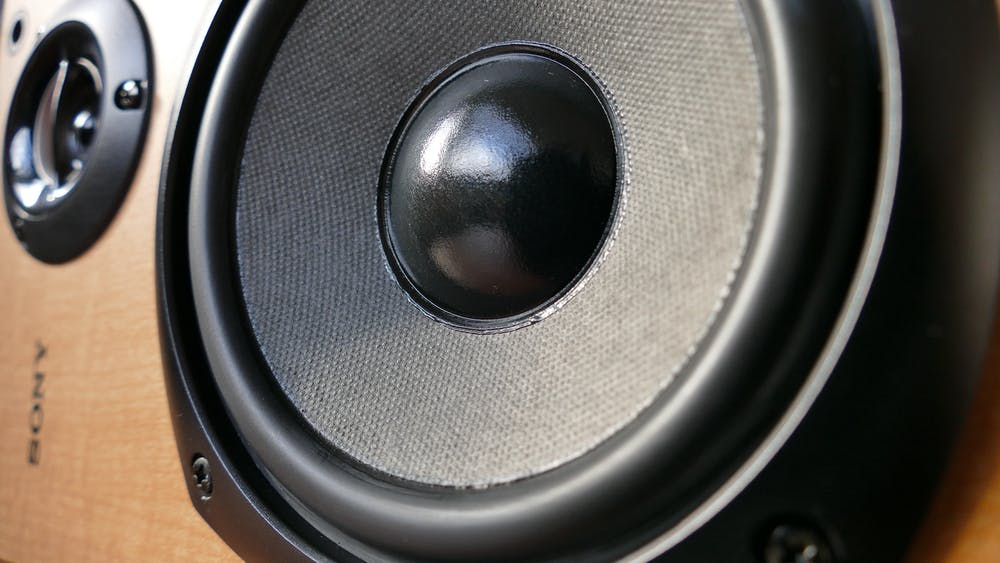

1. Swallowing protein powder without Water! (dryscooping)
The trend followed along on tiktok was extremely popular by young adults and teenagres. Many people have tried doing it, some of the reason is because they think it’s fun, or just want to earn more fame from tiktok. The challenge consists of swallowing a whole spoon of white powdery protein powder. It's even more dangerous than the cinnamon challenge, because the powder can clog up your throat and could make it hard for you to breathe. Many doctors highly recommend NOT doing this challenge, and rather add water to the protein powder to make it safe to swallow.
2. The cereal challenge
This challenge is something you shouldn't be doing when you're eating breakfast. It can cause suffocation in your throat, and can make it hard for you to breathe. The challenge is weird because a person has to lie down and open his/ her mouth. Then somebody else takes some cereal and starts pouring it inside the lying person's mouth. Soon after the person pours milk inside his mouth, and the person who poured everything has to eat the cereal from his/ hers mouth! It's that moment when things can go wrong, because it makes it hard for you to swallow saliva, and breath. This can cause the milk to go up your nose, and you have no other choice rather than spitting everything out.
3. The fox eyebrow trend
This is a weird makeup trend, because people think it’s cool to shave your half eyebrow and then cover it up with makeup. This gives your eyebrow a more pointed look, or as the tiktok world says it “a foxy look”.

4. The electric penny challenge
The penny challenge is a danger for you, and the firefighters. The challenge is to take an adapter halfway into an electrical socket, and touch it with a penny or other metal object. This trend was popular for teens, and they did it just to see some sparkle from the adapter. This has caused some fires, and electrical shortages.
5. The big lip challenge
People who wanted bigger lips have tried doing this, but many regret doing this. The former youtube trend has gained a lot of attention in 2021, by people who love fashion, trends and for those who want to look nice. The trend is to make your lips bigger by relatively big suction power. People have tried using their vacuum cleaner and attaching it to their lips to make it bigger. For some reason young people like big lips, and they think it looks nice. Many experts recommend Not doing this, because it can be harmful for your lips.
6. The pimple cupcake
This is a weird trend, and you probably have an idea of what it is by reading the headline. Yes it’s not real pimples, but it looks realistic. The cupcake looks disgusting and even got white goo inside of the cupcake just to give it the feeling of popping a real pimple. I’m sure that I Wouldn't eat one of those nasty cupcakes.
7. Coca cola and mint experiment
The fun experiment you probably did in elementary school as a science project, is now a trend. Different channels on youtube show people take large amounts of fizzy drinks, and mentos “mints” to have big explosions.
8. Biting fake apple trend
Apparently biting an apple is a trend now. But this trend is actually kinda cool, because there is a brand called Martinelli apple juice, and they sell apple juice. The apple juice itself isn’t as important, but the bottle is. So the plastic bottle has a round outer layer, and looks similar to an apple, but when you buthe the plastic it sounds almost exactly like a real apple!
9. Breaking windshield from high volume speakers
The trend most popular among young teens is breaking their windshield from high volume of music played on big stereo speakers. The speakers generate so much loud sound that the airways are more dense and are strong enough to break a windshield. If you are planning on having high volume speakers then remember to have airdots to not cause damage to your ears, and don't get too close to the speakers.
10. Filing your teeth
This is probably one of the weirdest and dumbest trends on tiktok. People who wanted perfect sized teeth have tried this. Some have faked their videos and said it works, and others have really tried this and regret their decision immediately. This trend is dangerous because it can damage your teeth. You don't really need perfect sized teeths (depends on person to person), all you really need is a big smile and brushing them.